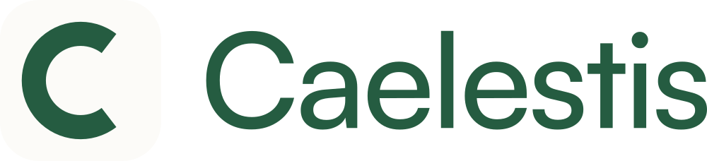
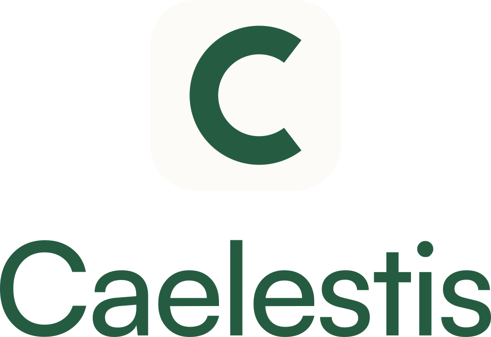

02, Logotype

Le logo et ses déclinaisons
La marque repose sur deux éléments, un monogramme géométrique en forme de C ouvert et un mot écrit en Satoshi. Ils s'utilisent seuls ou associés, jamais redessinés.

Horizontal, fond clairUsage courant, en-têtes et signatures

Horizontal, fond vertBandeaux, couvertures, réseaux

Vertical, fond clairFormats carrés et étroits

Vertical, fond vertPublications sociales
Mot seulQuand le monogramme est déjà présent
Monogramme seulAvatar, favicon, tampon, filigrane
Zone de protection et taille minimale
- Zone de protection : un espace vide égal à la moitié de la hauteur du monogramme, sur les quatre côtés. Aucun texte, aucune photo, aucun bord de page à l'intérieur.
- Taille minimale imprimée : 9 mm de haut pour le monogramme seul, 22 mm de large pour le logo horizontal.
- Taille minimale à l'écran : 32 px pour le monogramme, 120 px pour le logo horizontal.
- Sur photo : uniquement en crème, sur une zone sombre et calme de l'image, jamais posé sur un feuillage détaillé.
Ce qui est interdit sur le logo
- Le déformer, l'étirer, l'incliner ou l'arrondir davantage
- Changer sa couleur pour une teinte hors palette, ou lui appliquer un dégradé
- Lui ajouter une ombre portée, un contour, un reflet ou un effet de relief
- Réécrire le mot dans une autre police que Satoshi
- Poser le monogramme vert sur un fond vert, ou crème sur un fond crème
Point à trancher. La tuile du favicon actuel utilise le fond #F4F2EC, alors que le fond du site est #FCFBF8. L'écart est invisible isolément mais se voit lorsque les deux se touchent. Les fichiers de cette charte sont harmonisés sur #FCFBF8.